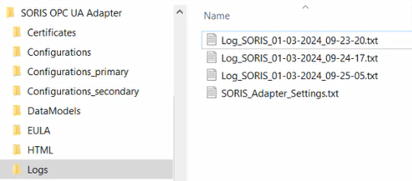

Handling OPC UA Adapter Logs
The OPC UA adapter log files are available in C:\Program Files (x86)\Siemens\SORIS OPC UA Adapter\Logs.

This folder includes log TXT files that are created when each adapter starts. A new log file is created each time an adapter service is stopped and restarted.
Each file contains the logs generated by the specific OPC UA adapters, with following naming convention:
Log_SORIS_dd-mm-yyyy-hh:mm:ss.txt
- To identify logs of a specific adapter:
- Open the files with a text editor and check HTTP port and Websocket port.